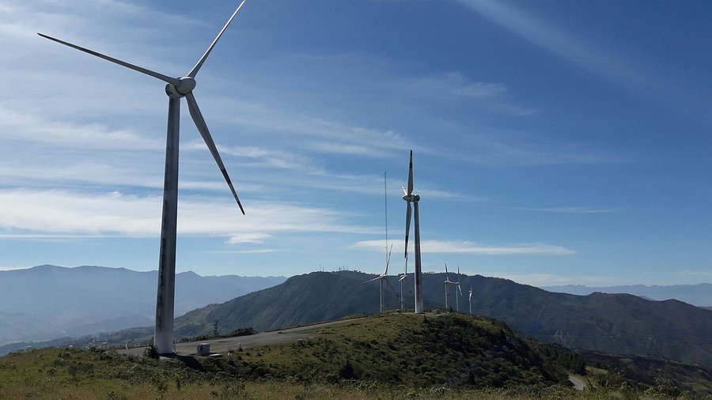
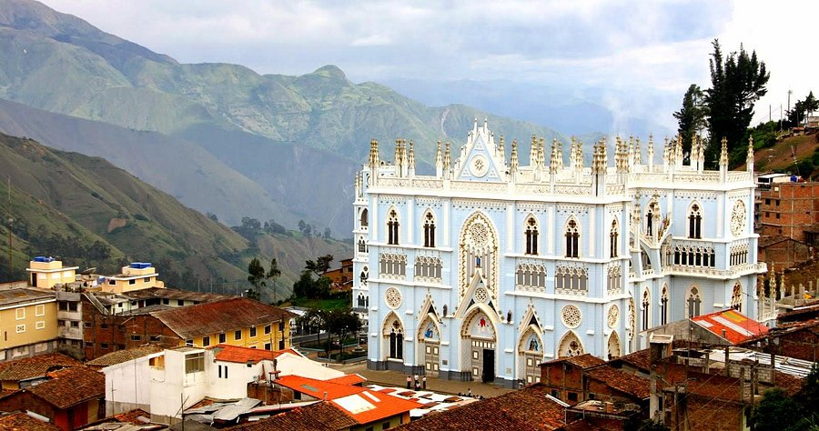
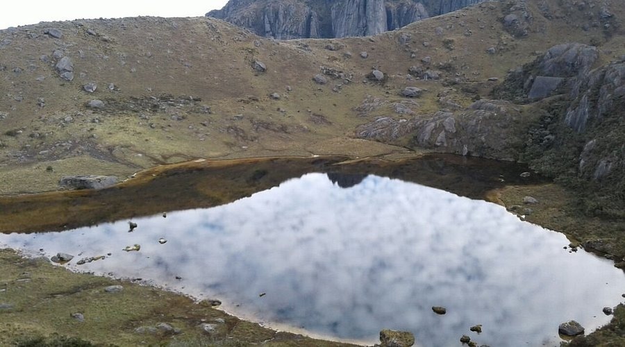
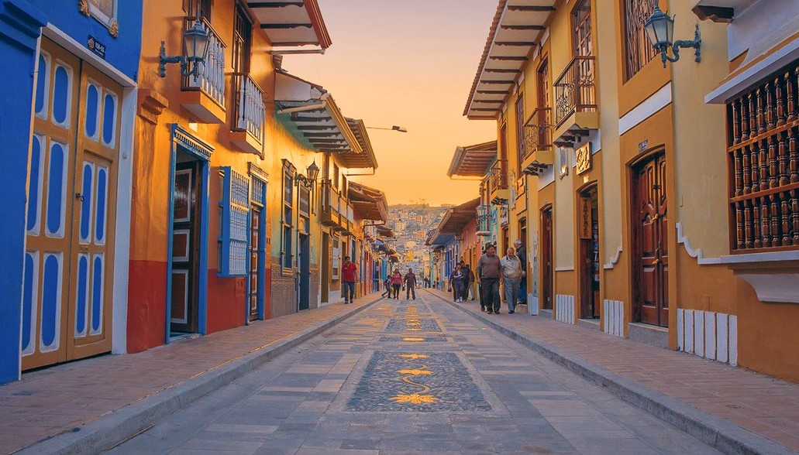
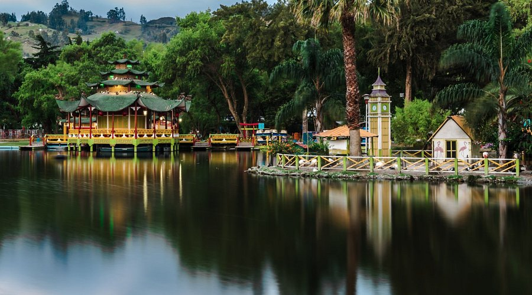

Por qué Loja?
Loja es un destino que te invita a descubrir su rica historia, vibrante cultura y asombrosa belleza natural. Conocida como la "Capital Musical y Cultural del Ecuador". Desde sus encantadoras calles coloniales hasta sus impresionantes paisajes en el Parque Nacional Podocarpus, cada rincón de esta ciudad cuenta una historia única.